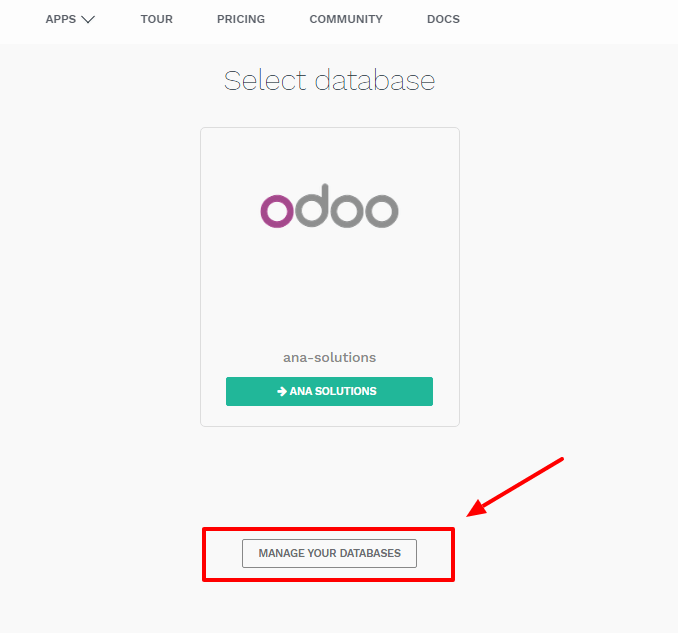
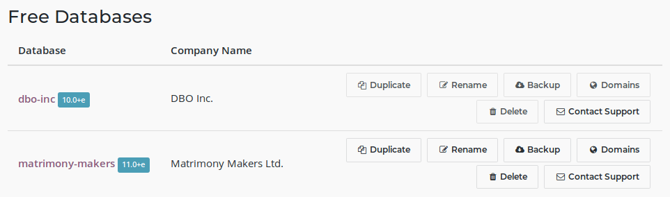
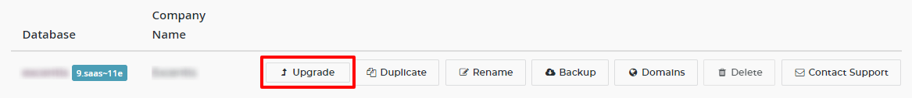
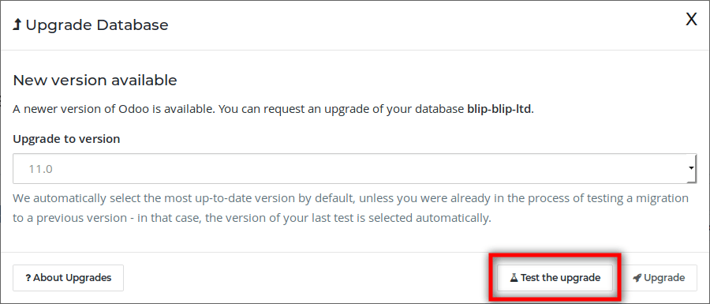
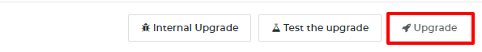
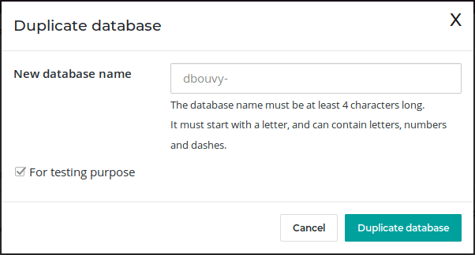
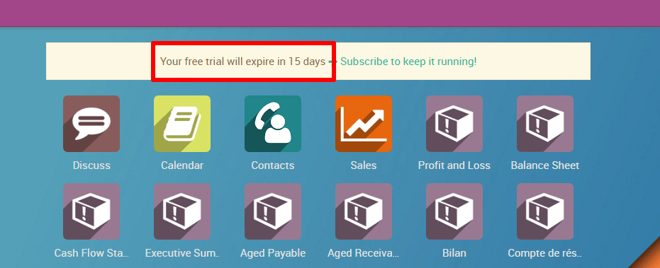
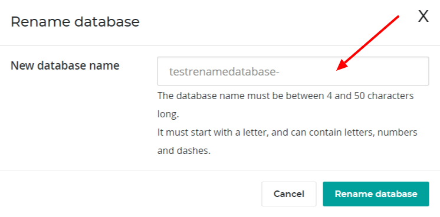
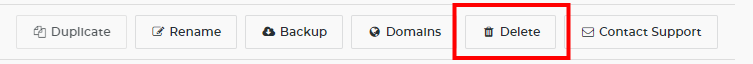
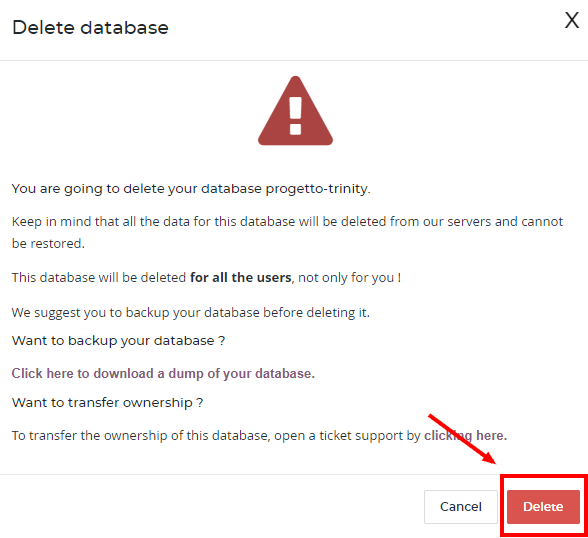

To manage your databases, access the database management page (you will have to sign in). Then click on the Manage Your Databases button.
Make sure you are connected as the administrator of the database you want to manage - many operations depends on indentifying you remotely to that database.
Several actions are available:
- Upgrade
- Upgrade your database to the latest Odoo version to enjoy cutting-edge features
- Duplicate
- Make an exact copy of your database, if you want to try out new apps or new flows without compromising your daily operations
- Rename
- Rename your database (and its URL)
- Backup
- Download an instant backup of your database; note that we back up databases daily according to our Odoo Cloud SLA
- Domains
- Configure custom domains to access your database via another URL
- Delete
- Delete a database instantly
- Contact Support
- Access our support page with the correct database already selected
Upgrade
Make sure to be connected to the database you want to upgrade and access the database management page. On the line of the database you want to upgrade, click on the "Upgrade" button.
You have the possibility to choose the target version of the upgrade. By default, we select the highest available version available for your database; if you were already in the process of testing a migration, we will automatically select the version you were already testing (even if we released a more recent version during your tests).
By clicking on the "Test upgrade" button an upgrade request will be generated. If our automated system does not encounter any problem, you will receive a "Test" version of your upgraded database.
Примечание
If our automatic system detect an issue during the creation of your test database, our dedicated team will have to work on it. You will be notified by email and the process will take up to 4 weeks.
You will have the possibility to test it for 1 month. Inspect your data (e.g. accounting reports, stock valuation, etc.), check that all your usual flows work correctly (CRM flow, Sales flow, etc.).
Once you are ready and that everything is correct in your test migration, you can click again on the Upgrade button, and confirm by clicking on Upgrade (the button with the little rocket!) to switch your production database to the new version.
Предупреждение
Your database will be taken offline during the upgrade (usually between 30min up to several hours for big databases), so make sure to plan your migration during non-business hours.
Duplicating a database
Примечание
Database duplication, renaming, custom DNS, etc. is not available for trial databases on our Online platform. Paid Databases and "One App Free" database can duplicate without problem.
In the line of the database you want to duplicate, you will have a few buttons. To duplicate your database, just click Duplicate. You will have to give a name to your duplicate, then click Duplicate Database.
Опасно
If you do not check the "For testing purposes" checkbox when duplicating a database, all external communication will remain active:
- Emails are sent
- Payments are processed (in the e-commerce or Subscriptions apps, for example)
- Delivery orders (shipping providers) are sent
- Etc.
Make sure to check the checkbox "For testing purposes" if you want these behaviours to be disabled.
After a few seconds, you will be logged in your duplicated database. Notice that the url uses the name you chose for your duplicated database.
Примечание
Duplicate databases expire automatically after 15 days.
Rename a Database
To rename your database, make sure you are connected to the database you want to rename, access the database management page and click Rename. You will have to give a new name to your database, then click Rename Database.
Deleting a Database
You can only delete databases of which you are the administrator.
Опасно
When you delete your database all the data will be permanently lost. The deletion is instant and for all the Users. We advise you to do an instant backup of your database before deleting it, since the last automated daily backup may be several hours old at that point.
From the database management page, on the line of the database you want to delete, click on the "Delete" button.
Read carefully the warning message that will appear and proceed only if you fully understand the implications of deleting a database:
After a few seconds, the database will be deleted and the page will reload automatically.
Примечание
- If you need to re-use this database name, it will be immediately available.
- It is not possible to delete a database if it is expired or linked to a Subscription. In these cases contact Odoo Support
- If you want to delete your Account, please contact Odoo Support